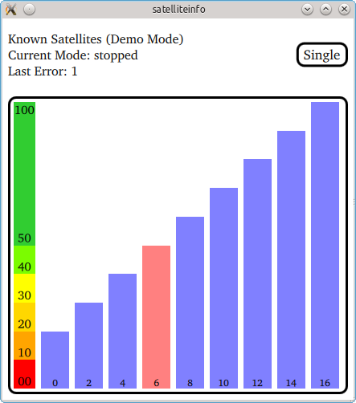

SatelliteInfo (C++/QML)
The SatelliteInfo example shows how the available satellites at the user's current position and marks the satellites currently contributing to the GPS fix as pink.
Key Qt Positioning classes used in this example:

The example displays the signal strength of all satellites in view. Any satellite that is currently used to calculate the GPS fix has been marked pink. The number at the bottom of each signal bar is the individual satellite identifier.
The application operates in three different modes:
| Application mode | Description |
|---|---|
| running | The application continuously queries the system for satellite updates. When new data is available it will be displayed. |
| stopped | The application stops updating the satellite information. |
| single | The application makes a single update request with a timeout of 10s. The display remains empty until the request was answered by the system. |
If the platform does not provide satellite information the application automatically switches into a demo mode whereby it continuously switches between predefined sets of satellite data.
Running the Example
To run the example from Qt Creator, open the Welcome mode and select the example from Examples. For more information, visit Building and Running an Example.
Files: